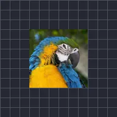

پلس اوپیسٹی

لیئر کو بار بار سائن یا ٹرائی اینگل ویو پر فیڈ آؤٹ اور ان کرتا ہے۔
سیٹنگز
| سیٹنگ | قسم | رینج | ڈیفالٹ |
|---|---|---|---|
| فریکوئنسی | نمبر | 0.1 Hz سے 16 Hz تک | 2 Hz |
| طاقت | نمبر | 0% سے 100% تک | 100% |
| ابتدائی فیز | نمبر | 0 سے 2 تک | 0 |
| ویو | انتخاب | سائن, ٹرائنگل | سائن |

لیئر کو بار بار سائن یا ٹرائی اینگل ویو پر فیڈ آؤٹ اور ان کرتا ہے۔
| سیٹنگ | قسم | رینج | ڈیفالٹ |
|---|---|---|---|
| فریکوئنسی | نمبر | 0.1 Hz سے 16 Hz تک | 2 Hz |
| طاقت | نمبر | 0% سے 100% تک | 100% |
| ابتدائی فیز | نمبر | 0 سے 2 تک | 0 |
| ویو | انتخاب | سائن, ٹرائنگل | سائن |